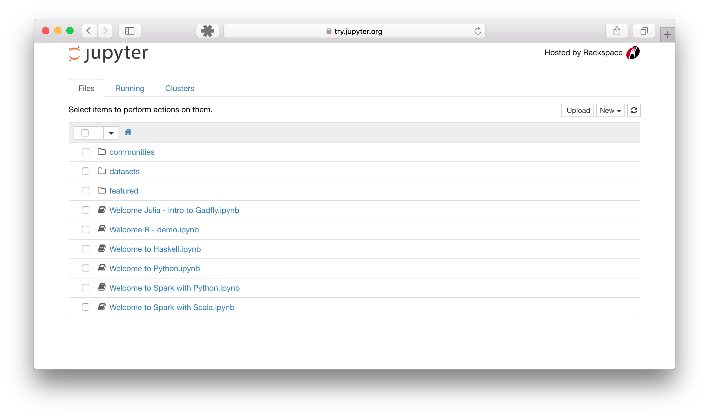
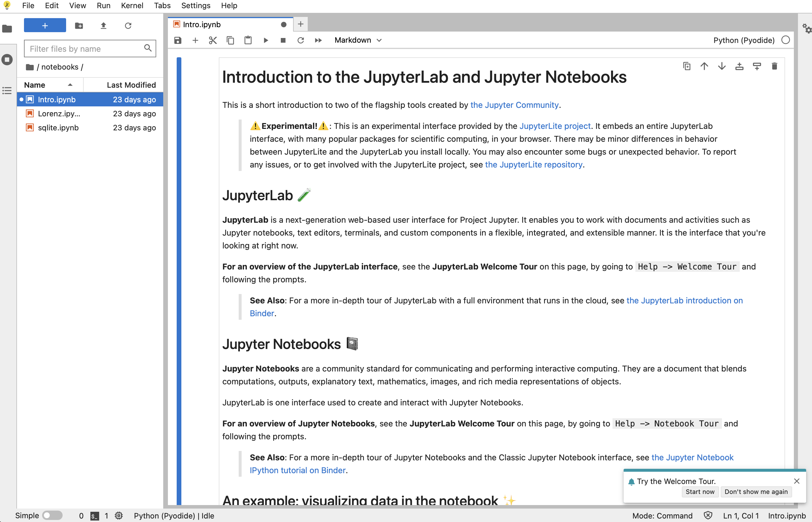

Using Project Jupyter#
The Classic Notebook interface#
The Classic Notebook interface is a document-oriented interface that allows you to create, view, and execute code in a Jupyter Notebook.
The example should look like this:
Notebook Dashboard

Notebook Editor

Try the JupyterLab interface#
The Jupyter Lab interface is a more extensible and composable interactive computing interface for more complex workflows.
Here’s an example of what the JupyterLab interface looks like:

Jupyter Lab Interface#
The best platform for this class (outside of computing restrictions) is JupyterLab. Many, if not all the features we will discuss are available in Google Colab.
JupyterLab is a next-generation web-based user interface for Project Jupyter.

JupyterLab enables you to work with documents and activities such as:
Jupyter notebooks
text editors
terminals
custom components
Here is a short video that rapidly goes over many of the cool features in Jupyter
Show code cell source
from IPython.display import HTML
HTML(
'<iframe width="800" height="450" src="https://www.youtube.com/embed/A5YyoCKxEOU" title="How to Use JupyterLab" frameborder="0" allow="accelerometer; autoplay; clipboard-write; encrypted-media; gyroscope; picture-in-picture" allowfullscreen></iframe>'
)
C:\ProgramData\Miniconda3\envs\mem680\lib\site-packages\IPython\core\display.py:431: UserWarning: Consider using IPython.display.IFrame instead
=======
C:\Users\Joshua Agar\AppData\Roaming\Python\Python310\site-packages\IPython\core\display.py:431: UserWarning: Consider using IPython.display.IFrame instead
>>>>>>> 6705a020b0958f423ff6ce78f503bc970904e6d0
warnings.warn("Consider using IPython.display.IFrame instead")
Running Jupyter Lab#
Once you have Jupyter Lab installed you can spin up a Jupyter Lab with:
jupyter lab
Jupyter Notebooks#
Within Jupyer Lab you will primarily use Jupyter Notebooks. These are files with .ipynb extensions
Introduction#
Web based platform for developing, documenting, and executing code, as well as communicating the results
A web application: a browser-based tool for interactive authoring of documents which combine explanatory text, mathematics, computations and their rich media output.
Notebook documentation: a representation of all content visible in the web application, including inputs and outputs of the computations, explanatory text, mathematics, images, and rich media representations of objects.
Main Features of the Web Application#
In-browser editing for code, with automatic syntax highlighting, indentation, and tab completion/introspection.
The ability to execute code from the browser, with the results of computations attached to the code which generated them.
Displaying the result of computation using rich media representations, such as HTML, LaTeX, PNG, SVG, etc. For example, publication-quality figures rendered by the
matplotliblibrary, can be included inline.In-browser editing for rich text using the Markdown markup language, which can provide commentary for the code, is not limited to plain text.
Tab Complete#
If you start typing the name of a package, or an object you can press the tab button to discover what is available (twice) or complete the name
Importing packages#
import sklearn.cluster as clus
Reading Documentation#
?? cluster.KMeans
Object ` cluster.KMeans` not found.
Structure of Notebook Document#
Consists of a sequence of cells
Cells can be executed by pressing
shift + enter
Types of Cells#
Code Cells#
A code cell allows you to write new python code that can be executed on the kernel, generally this is python
from IPython.display import Image
Image(url="http://python.org/images/python-logo.gif")
Other examples can be seen at A Rich Output Example.
Markdown Cells#
These cells provide the ability to add sequential documentation to your code using simple style guides
Structure for document can be provided using
#or##You can include mathematical equations in LaTeX notation
$...$or$$...$$
\(e^{i\pi} + 1 = 0\) $\(e^x=\sum_{i=0}^\infty \frac{1}{i!}x^i\)$
Other examples can be seen at A Markdown Example
Raw Cells#
These are cells where you can write the output directly without it being evaluated by the notebook
Important Keyboard Shortcuts#
Shift + Enter - Run a cell
up/down arrows - move between cells
Enter - edit mode
Esc - command mode allows you to navigate using keyboard shortcuts
a- add cell aboveb- add cell belowc- copy cellv- paste celld, d- delete cellm- change cell to markdowny- change to code modeI, I- Interrupt kernel
Other examples can be seen at Jupyter Tricks.
Magic Functions#
Magic functions allow your IPython kernel to perform useful functions
Some useful magics:
%precision 4sets printed precision for floats to 4 decimal places%whosgives a list of variables and their values%quickrefgives a list of magics
The full list of magics is here.
%quickref